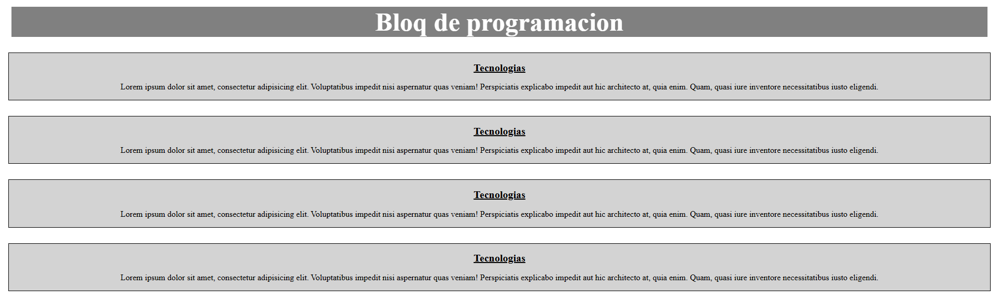
Lorem Cards
Mi primer contacto con HTML/CSS: tarjetas de texto de relleno. Aprendí estructura básica y modelos de caja.
HTMLCSS
Aprendizaje: etiquetas semánticas y estilos iniciales
Ver Proyecto
Junio – Julio 2025. Desde mis primeras líneas de HTML hasta una API REST con Laravel. Cada carpeta representa una victoria pequeña, un concepto asimilado, una chispa de curiosidad. Este es mi archivo académico.
Durante mi participación en WorldSkills 2025, mientras cursaba el primer trimestre de ADSO se realizaron los siguentes 20 proyectos que marcan mi evolución: desde maquetación básica hasta un CRUD completo con Laravel.
Cada proyecto tiene su propia historia, su dificultad y su momento “ajá”. Las capturas que ves son testimonios visuales de ese proceso.
HTML, CSS, Flexbox, Grid, BEM, primeras maquetaciones
JavaScript: lógica, DOM, eventos, drag & drop, cronómetros
PHP, formularios, introducción a backend
Laravel, API REST, base de datos SQLite
Cada tarjeta te lleva al código fuente. Haz clic en “Ver Proyecto” para explorar el ejercicio en tu navegador.

Mi primer contacto con HTML/CSS: tarjetas de texto de relleno. Aprendí estructura básica y modelos de caja.
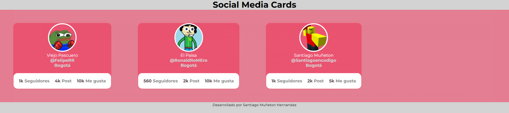
Tarjetas de perfil de usuario. Practiqué organización con divs y selectores CSS.
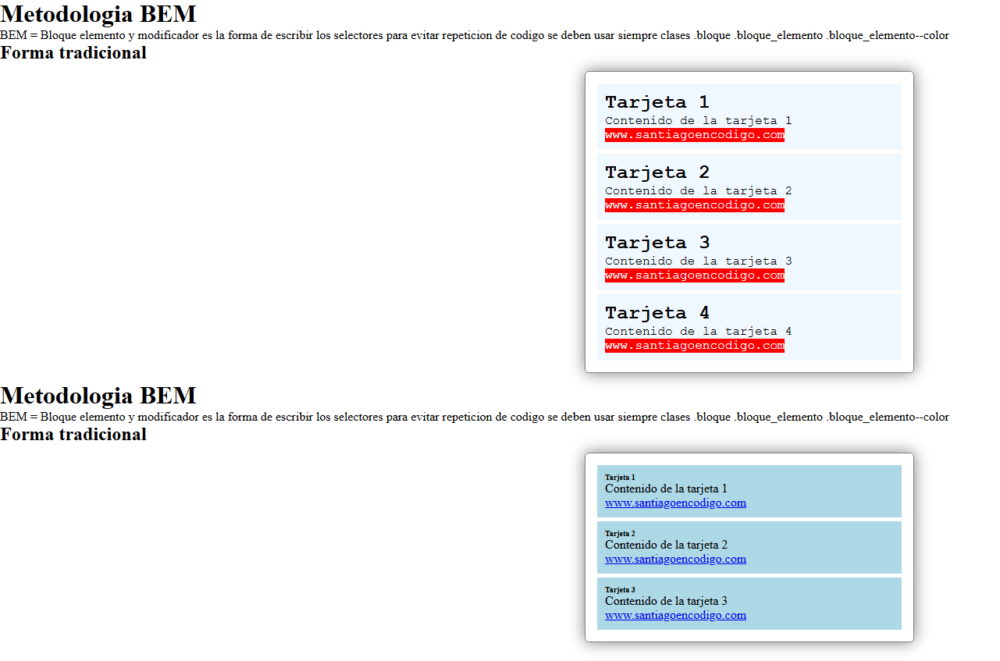
Aplicación de la convención Bloque–Elemento–Modificador para nombrar clases CSS.
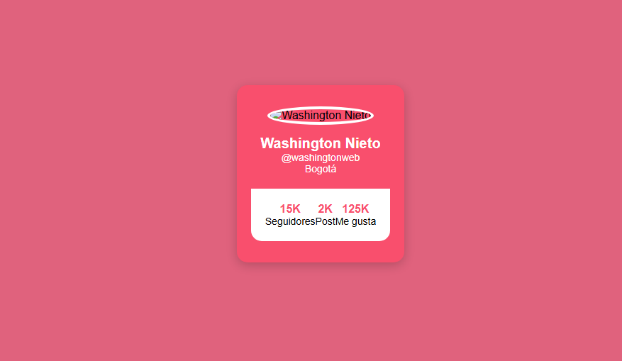
Tarea autónoma: replicar una tarjeta de perfil del instructor. Primer ejercicio sin guía.
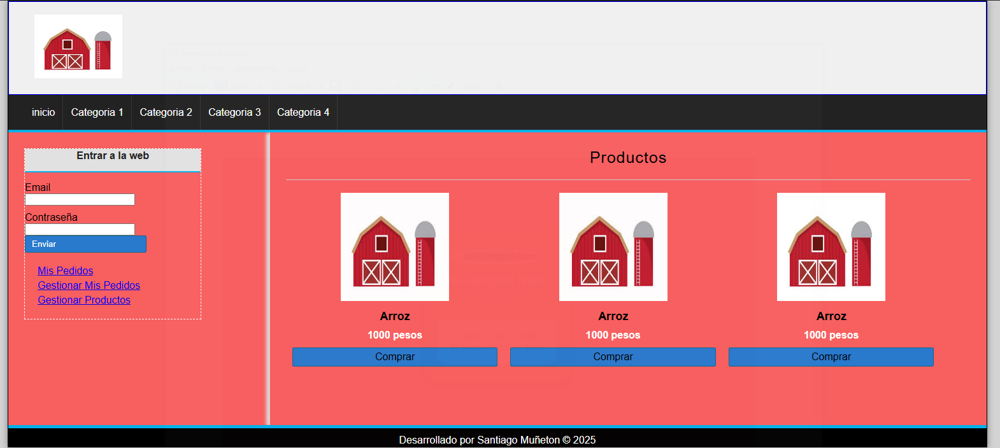
Maquetación básica de un ecommerce: productos, precios, área de login y pedidos.
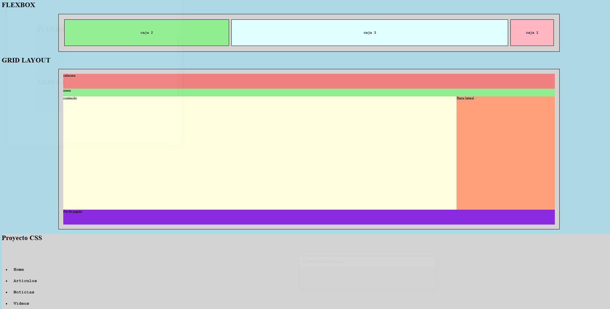
Laboratorio de layouts modernos y animaciones CSS. Primer asombro con keyframes.
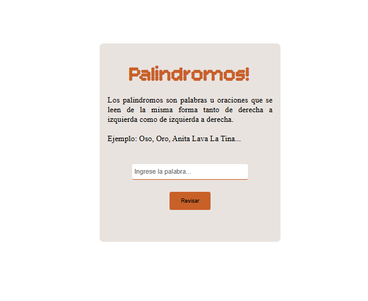
Validador de palabras o frases palíndromas. Primer algoritmo con JavaScript.
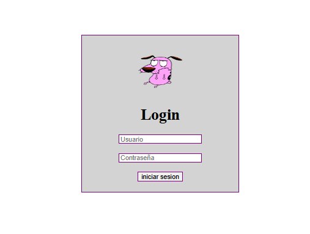
Primer contacto con PHP: formulario de autenticación básico. Antesala de Laravel.
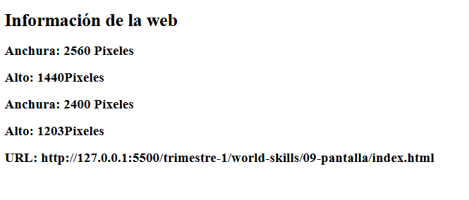
JavaScript para obtener dimensiones de la ventana y URL actual.
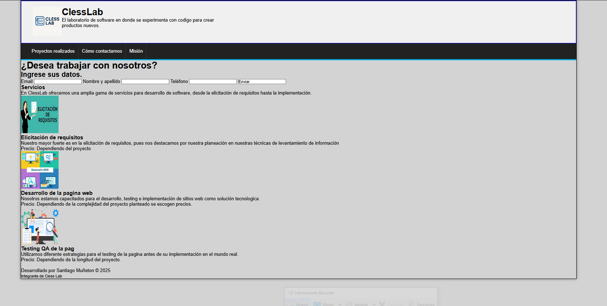
Mi primera página web completa hecha por mí solo. Me costó bastante, pero fue mi punto de partida real.
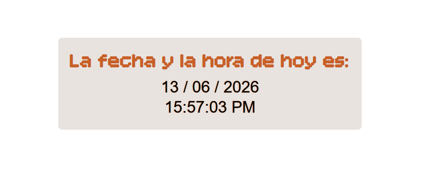
Reloj y calendario dinámico con JavaScript. Actualización en tiempo real.
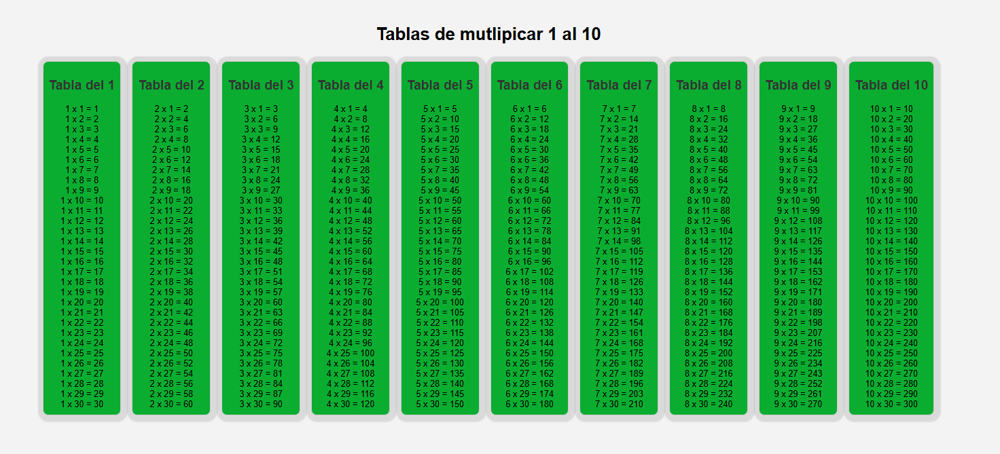
Generador dinámico de tablas del 1 al 30 usando bucles for.
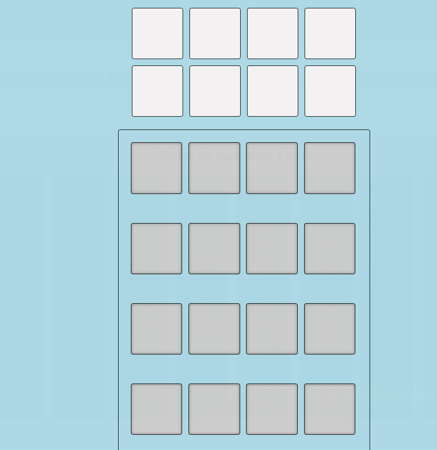
Interfaz Drag & Drop nativo. Apareció en la competencia.
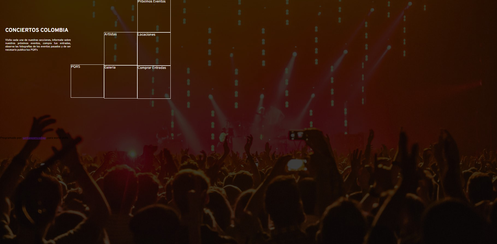
Práctica de Grid y Flexbox para organizar secciones. Aunque no me gustó visualmente, fue muy importante para aprender.
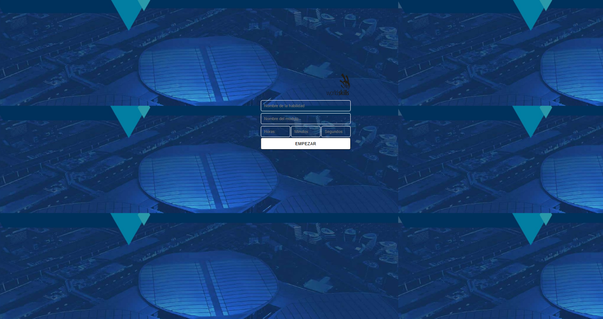
Cronómetro interactivo con PHP y JavaScript. Requiere XAMPP.
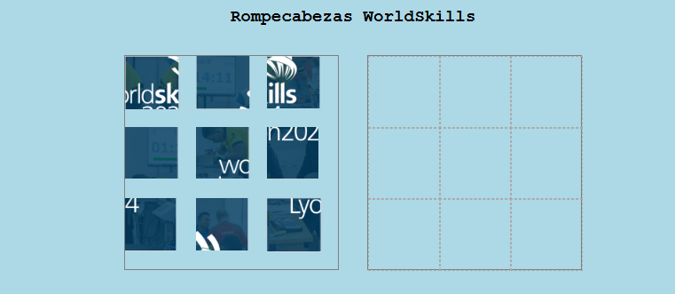
Puzzle con imágenes de WorldSkills usando Drag & Drop. Muy satisfactorio de ver funcionando.
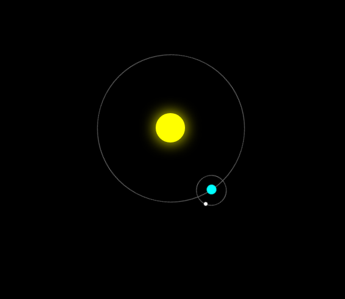
Sistema planetario animado solo con HTML y CSS. Apareció en la competencia.
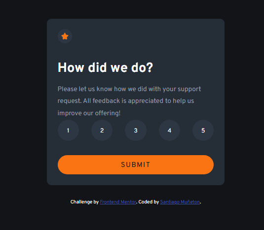
Desafío de Frontend Mentor. El instructor Washington nos recomendó la página.
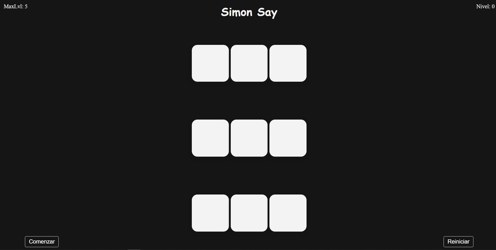
Juego de memoria basado en un tutorial. Mi versión personal.
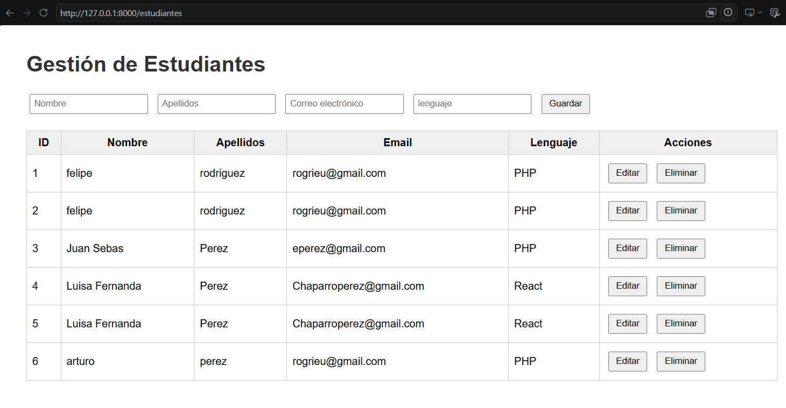
CRUD completo con Laravel 11, API REST y SQLite. El proyecto más completo de backend.